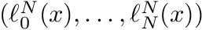
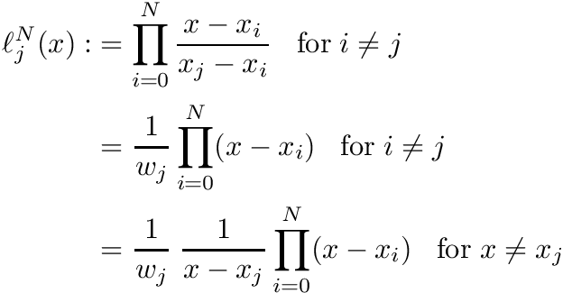

This module provides several routines for Lagrange-Interpolation. More...
Data Types | |
| interface | calc_lagrange_polynomial |
Distinguishes if a pre-processed denominator weights(:) for Lagrange interpolation is provided or not. More... | |
Functions/Subroutines | |
| pure real(rk) function, dimension(size(knots)), public | calc_weights (knots) |
Pre-calculates the Lagrange polynomial's denominators weights(:) More... | |
| pure real(rk) function, dimension(size(knots)) | lagrange_p_k (x, knots) |
| This is just a convenience function taking together calc_weights() and lagrange_p_kw(). More... | |
| pure real(rk) function, dimension(size(knots)) | lagrange_p_kw (x, knots, weights) |
Evaluates the Lagrange-polynomial for a single point x. To obtain the weigts(:) - the Lagrange polynomials denominator - invoke calc_weights(). More... | |
| pure real(rk) function, dimension(size(l_x), size(l_y), size(l_z)), public | create_3d_vandermonde_matrix (l_x, l_y, l_z) |
| Convenience function which calculates the so called Vandermonde-matrix corresponding to a single interpolation point (x,y,z). Actually, this is not doing much more than a reshape. More... | |
Detailed Description
This module provides several routines for Lagrange-Interpolation.
The module can be used as follows:
- Start with a set of N+1 disjoint collocation points named
knots(:) - Pre-calculate the N+1 Lagrange-polynomial's denominators
weights(:) = calc_weights(knots) - Pre-calculate the N+1 Lagrange-polynomials for a pint x
l(:) = calc_lagrange_polynomial(x, knots, weights) - To carry out the actual interpolation a set of N+1 function values
 is needed. An implementation might be
is needed. An implementation might be SUM( l(:)*f(:) ).
In addition there is a convenience function create_3d_vandermonde_matrix() which simplifies 3d Lagrange interpolation for an orthogonal set of Lagrange polynomials e.g. l_x(:), l_y(:) and l_z(:).
To specify the precision of floats this module expects to find a parameter parameters_mod::real_kind in a module named parameters_mod.
Function/Subroutine Documentation
◆ calc_weights()
| pure real(rk) function, dimension(size(knots)), public interp_mod::calc_weights | ( | real(rk), dimension(:), intent(in) | knots | ) |
Pre-calculates the Lagrange polynomial's denominators weights(:)
This usually is a preprocessing step for optimization. For degree N Lagrange polynomials the denominator is defined as
with  the N+1 collocation points
the N+1 collocation points
- Parameters
-
knots The N+1 collocation points . Array of size N+1.
- Returns
- The Lagrange polynomial's denominators
 . Array of size N+1.
. Array of size N+1.
Definition at line 83 of file interpolation_mod.f90.
◆ create_3d_vandermonde_matrix()
| pure real(rk) function, dimension(size(l_x), size(l_y), size(l_z)), public interp_mod::create_3d_vandermonde_matrix | ( | real(rk), dimension(:), intent(in) | l_x, |
| real(rk), dimension(:), intent(in) | l_y, | ||
| real(rk), dimension(:), intent(in) | l_z | ||
| ) |
Convenience function which calculates the so called Vandermonde-matrix corresponding to a single interpolation point (x,y,z). Actually, this is not doing much more than a reshape.
To carry out the actual interpolation for a set of  function values - which is - say
function values - which is - say SUM( vm(:,:,:)*f(:,:,:) ).
- Parameters
-
l_x Lagrange polynomial in x-direction evaluated for x. Size N_x + 1. l_y Lagrange polynomial in y-direction evaluated for y. Size N_y + 1. l_z Lagrange polynomial in z-direction evaluated for z. Size N_z + 1.
- Returns
- The Vandermonde-matrix of shape (N_x+1, N_y+1, N_z+1)
Definition at line 194 of file interpolation_mod.f90.
◆ lagrange_p_k()
|
private |
This is just a convenience function taking together calc_weights() and lagrange_p_kw().
@waring Do not use this function for evaluating the same polynomial for multiple x. In the interest of performance provide pre- calculated denominators i.e. weights(:).
To perform an actual interpolation N+1 function values are needed. An implementation might be SUM( f(:)*l(:) )
- Parameters
-
x Interpolation point; Should be within the range of collocation points ![$[x_0 \dots x_N]$](form_112.png) .
. knots The N+1 disjoint collocation points . Array of size N+1.
- Returns
- The Lagrange polynomial  evaluated for x. Array of size N+1.
Definition at line 111 of file interpolation_mod.f90.
◆ lagrange_p_kw()
|
private |
Evaluates the Lagrange-polynomial for a single point x. To obtain the weigts(:) - the Lagrange polynomials denominator - invoke calc_weights().
In terms of efficiency the following approach makes more sense than implementing the pure definition:

For actual computation the property  is used.
is used.
- Note
- If just a single collocation point is passed
[1.0]is returned.
To perform an actual interpolation N+1 function values are needed. An implementation might be SUM( f(:)*l(:) )
- Parameters
-
x Interpolation point. Should lie within the range of collocation points . knots The N+1 disjoint collocation points . Array of size N+1. weights Lagrange polynomial's denominators . Array of size N+1. See calc_weights().
- Returns
- The Lagrange polynomial evaluated for x. Array of size N+1.
Definition at line 151 of file interpolation_mod.f90.